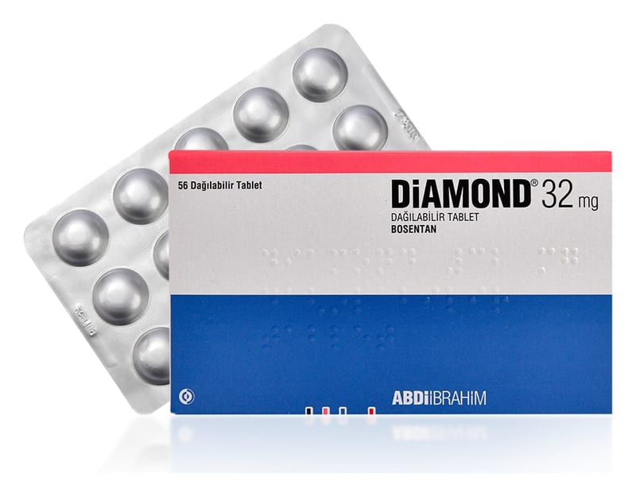

Diamond 32 mg Dağılabilir Tablet, 56 adet

Ne için kullanılır
KT · Bölüm 1DİAMOND, 32 mg bosentan içeren dağılabilir tabletler şeklinde her bir kutuda 56 adet olarak satılır. DİAMOND 32 mg dağılabilir tabletler soluk sarı ila beyazımsı, bir yüzü dört parçaya bölünmüş, diğer yüzünde B baskısı olan yonca şeklindedir.
DİAMOND tabletler kan damarlarının daralmasına sebep olan endotelin-1 adlı hormonu bloke eden bosentan içerir. DİAMOND bu sebeple kan damarlarının genişlemesine sebep olur ve “endotelin reseptör antagonisti” denilen ilaç grubuna dahildir.
DİAMOND yetişkinlerde aşağıdaki hastalıkların tedavisinde kullanılır: • Pulmoner arteriyel hipertansiyon (PAH): PAH, akciğerlerdeki kan damarlarının şiddetli daralması sonucu kalpten akciğerlere kan taşıyan damarlarda (pulmoner arterler) yüksek kan basıncı ile sonuçlanan bir hastalıktır. Bu basınç akciğerlerden kana geçecek
oksijeni azaltarak fiziksel aktiviteyi zorlaştırmaktadır. DİAMOND, pulmoner arterleri genişleterek kalbin bu damarlara kan pompalamasını kolaylaştırır. Bu da kan basıncını düşürür ve belirtileri hafifletir.
DİAMOND pulmoner arteriyel hipertansiyonlu (PAH) sınıf II, III ve IV hastaların tedavisinde egzersiz kapasitesini (fiziksel aktivite yapabilme yeteneği) ve semptomları iyileştirmede kullanılır.
DİAMOND’ın yetişkinlerde kullanılabildiği PAH tipleri: • Primer (tanımlanmış bir sebep yok ya da ailesel) • Sklerodermanın sebep olduğu (sistemik skleroz olarak da tanımlanan cilt ve diğer organları destekleyen bağ dokusunun anormal büyümesi şeklindeki hastalık) • Kalp ve akciğerlerde anormal kan akımına sebep olan doğumsal şantlı (anormal geçiş) kalp kusurlarının sebep olduğu
• Dijital ülserler: (El ve ayak parmaklarındaki yaralar) Sklerodermalı yetişkin hastalarda görülen dijital ülserlerin tedavisinde kullanılmaktadır. DİAMOND el ve ayak parmaklarında çıkan yeni dijital ülserlerin sayısını azaltmaktadır.
DİAMOND çocuklarda idiyopatik (tanımlanmış bir sebebi bulunmayan) ve konjenital pulmoner arteriyel hipertansiyon hastalıklarının (doğuştan akciğerlerdeki kan damarlarının şiddetli daralması sonucu kalpten akciğerlere kan taşıyan damarlarda yüksek kan basıncı ile sonuçlanan hastalık) tedavisinde kullanılır.